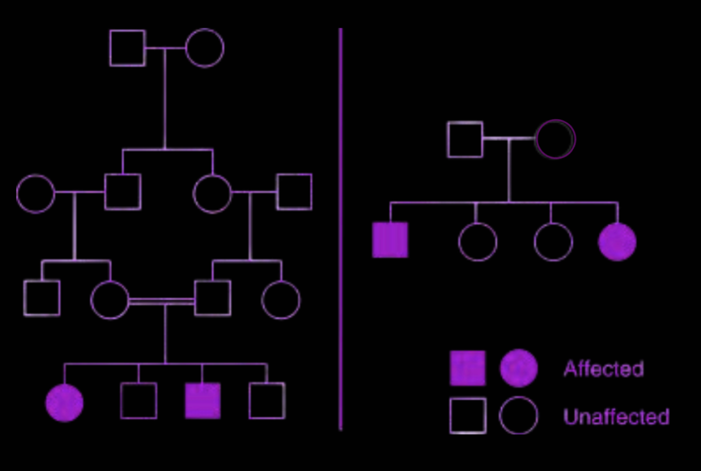
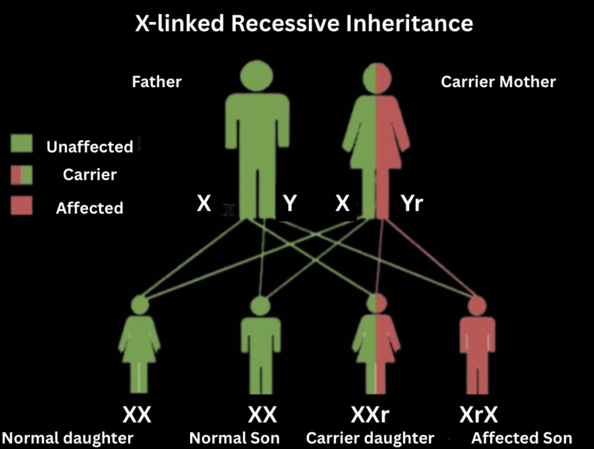

Autosomal Inheritance
Autosomal Dominant:
- Affected offspring only need to have one affected parent (heterozygous individuals will still express the trait due to dominant masking)
- The condition appears in every generation when analyzing the pedigree.
- A dominant affected individual can have one or two dominant alleles (AA or Aa).
Autosomal Recessive:
- In order for offspring to be affected, both of its parents must AT LEAST be carriers (heterozygous OR homozygous recessive).
- In other words, a recessive affected individual MUST have two recessive alleles (aa).
- The condition may not appear in every generation.
- Note that individuals who are carriers do not exhibit symptoms.
Consider the following Pedigree:

- Affected individuals are only observed in one generation, so it is unlikely that it is dominant. It must be recessive.
- Furthermore, BOTH a male and a female are affected, so it must be autosomal.
- Therefore, the mode of inheritance for this pedigree is autosomal recessive.
Sex-Linked Inheritance
Traits must be carried by either the X or Y chromosome (sex chromosomes).
- X-linked inheritance is the most common type of sex-linked inheritance, because the X chromosome contains about 5 times more genes than the Y chromosome.
- Recessive X-linked inheritance is always expressed in males (who have only one X) and in females ONLY if they inherit two copies of the mutated gene.
- Dominant X-linked inheritance will be expressed in males and in females who inherit EVEN ONE copy of the mutated gene.
The following diagram effectively displays the outcomes of X-linked Recessive Inheritance:

Written by Josephine Ankomah